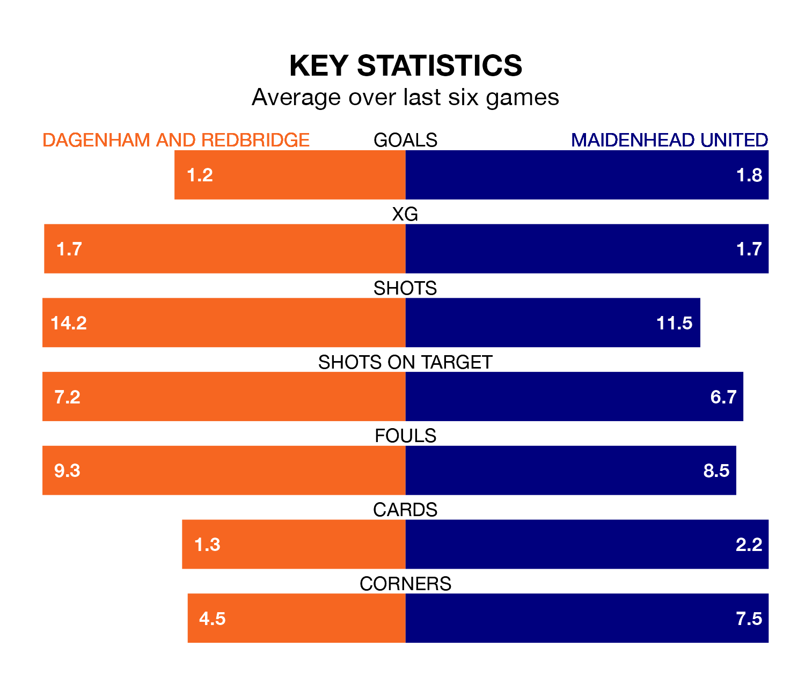

Maidenhead United travel to Dagenham and Redbridge on Saturday in the National League.
The visitors come into the game on the back of a win in their last match, having beaten Dorking Wanderers 4-2 at home, with goals from Tristan Abrahams, Jayden Mitchell-Lawson, Reece Smith and Sam Beckwith.
Dagenham & Redbridge, meanwhile, lost their last match, 1-0 against Gateshead.
In the last 10 years, Dagenham & Redbridge and Maidenhead have played each other on 15 occasions. Dagenham & Redbridge won seven of them, Maidenhead five, and they drew three times.
On average, Dagenham & Redbridge scored 1.3 goals and Maidenhead 1.0 in those matches.
Their last meeting was on August 19, when Maidenhead won 1-0 at home.
With 43 goals in 38 games so far this season, Maidenhead are the league's third-lowest scorers with 1.1 goals per game. But they are conceding fewer than average too, letting in 53 goals at a rate of 1.4 per game.
Dagenham & Redbridge are also below average scorers, with 1.4 goals per game, compared to a league average of 1.5. They have also conceded 1.4 goals per game.
The home team are in disappointing form in the National League, with one win and three draws from their last six games.
With two wins and four losses over that period, United's form is similar – they have both taken six points from 18.
The visitors are 16th in the table after 38 games, of which they have won 11 and drawn 12, earning 45 points.
Dagenham & Redbridge are three places ahead of Maidenhead in 13th, with 12 wins and 10 draws putting them on 46 points.
Updated: 15:10 (UTC), 15/03/24